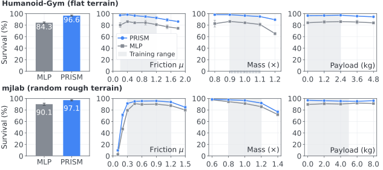
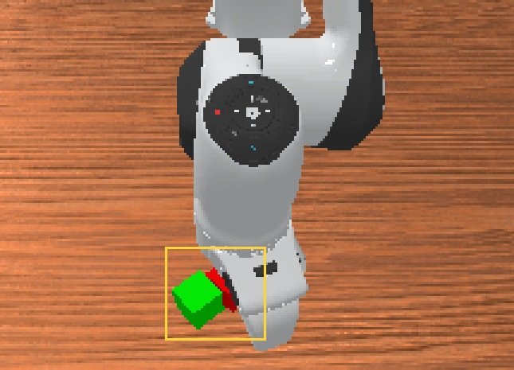
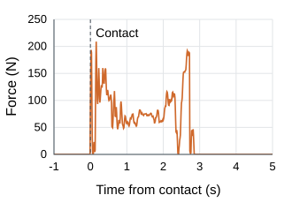
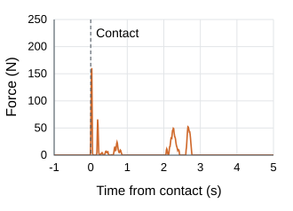
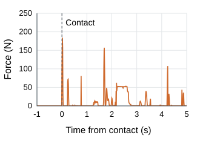
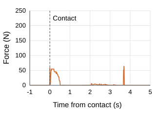

Robotics · Representation learning
PRISM: Polynomial interactions
for robot control
Robot control depends on interactions between physical variables. PRISM learns these interactions explicitly, improving locomotion, manipulation, and recovery.
Read the paperG1 on uneven terrain · 20-second rollout, 0.5 m/s command.
Recording details
Rough-terrain videos use the first prescribed reset of the current mjlab evaluation on a 21 × 21 terrain grid. They are illustrative CPU replays; aggregate survival is measured separately over 1,000 attempts per method and condition.
The flat-terrain comparison shares the initial state and 24-second command schedule. Matched MLP falls at 12.08 s; PRISM completes 24 s. The displayed clip covers 8–24 s.
Video provenance ↗Results across robot control
The gains extend from walking and manipulation to recovery and real hardware.
| Evaluation | Baseline | PRISM | Gain (pp) |
|---|---|---|---|
| WalkingHumanoid-Gym · 24 s survival | 51% | 92.5% | +41.5 |
| ManipulationACT · mean success on 3 tasks | 63.5% | 67.6% | +4.1 |
| Multi-task VLASmolVLA · LIBERO success | 62% | 63.8% | +1.8 |
| Unseen dynamics · flatHumanoid-Gym · 60 s survival | 78.3% | 92.3% | +14.0 |
| Unseen dynamics · roughmjlab G1 · 20 s survival | 80% | 87.1% | +7.1 |
| Drop recoveryStackCube · 44 shared states | 40.9% | 52.3% | +11.4 |
| Real-robot pickupSO-101 · 50 attempts | 68% | 94% | +26.0 |
Survival and task success use the respective evaluation protocols. Unseen-dynamics entries average six out-of-range settings at fixed checkpoints.
Download results ↓Walking when physics changes
PRISM retains its advantage as friction, robot mass, and payload change beyond training ranges. The policies are evaluated at fixed checkpoints, without retraining.

Evaluation protocol
Humanoid-Gym compares a parameter-matched MLP with PRISM. Each condition uses five evaluation seeds and 200 episodes per seed; the figure reports mean ± sample SD.
mjlab compares the standard MLP with PRISM on random rough terrain. Each condition uses 1,000 paired attempts: five fixed layouts × 200 resets, starting from rest with a 0.5 m/s forward command. Survival requires remaining upright within terrain support. The plotted intervals are conditional Wilson 95% intervals.
mjlab training ranges: friction 0.3–1.2, link mass/inertia multiplier 0.8–1.2, torso payload 0–5 kg. The six-setting rough summary excludes the extra μ = 0.1 endpoint.
Download figure PDF ↗Recovery after an object drop
From the same 44 validated drop states, PRISM recovers 23 times, compared with 18 for ACT. It also has the lowest mean capped recovery time and terminal placement error in this bank.
| Policy | Recovered ↑ | Capped time (s) ↓ | Placement error (mm) ↓ |
|---|---|---|---|
| ACT | 18/44 (40.9%) | 3.38 | 141.7 |
| ACT + MCC-Sensorless | 6/44 (13.6%) | 4.50 | 123.5 |
| ACT + MCC-Oracle | 15/44 (34.1%) | 3.71 | 105.4 |
| PRISM | 23/44 (52.3%) | 3.11 | 96.2 |
Final 100K checkpoints. Means include all 44 attempts; failures receive the 5 s cap. MCC variants are simulation adaptations.
Contact force relaxes after contact





In this illustrated recovery, PRISM first completes the task 0.85 s after contact. All traces share the initial state and axes, and continue through 5 s after contact. The low-load phase includes object release. Force is recorded for evaluation and is not a policy input.
On a physical SO-101, PRISM succeeds in 47/50 tape-pickup attempts (94%), compared with ACT's 34/50 (68%), using the same 50 demonstrations. Success requires lifting the roll at least 5 cm and holding it for 3 s.
Learning the interactions
Physical dynamics depend on products of variables. PRISM gives the policy a compact polynomial representation of its observations, so those interactions can be learned directly through the existing training objective.
ψ₂(x) = u + s₂ (u ⊙ v)u and v are affine projections of the input. The elementwise product introduces interactions without enumerating every polynomial term.
What the representation captures
Linear probes on frozen features better predict physical quantities such as joint power and contact impulse. These are analysis targets, rather than additional policy inputs.
| Probe target | Baseline MSE ↓ | PRISM MSE ↓ | Baseline PCC ↑ | PRISM PCC ↑ |
|---|---|---|---|---|
| Slip velocity | 0.711 | 0.700 | 0.501 | 0.549 |
| Joint power | 0.328 | 0.282 | 0.820 | 0.848 |
| Contact impulse | 0.301 | 0.241 | 0.829 | 0.861 |
| Contact work proxy | 0.362 | 0.319 | 0.755 | 0.780 |
Held-out rollout windows, horizon 5. Lower MSE and higher PCC indicate better predictability.
Detailed benchmarks
Locomotion · Humanoid-Gym
| Policy | Reported parameters | Survival (%) ↑ | Linear error ↓ | Yaw error ↓ |
|---|---|---|---|---|
| MLP baseline | 0.926M | 51 ± 3.7 | 0.4607 | 0.2817 |
| Larger MLP | 1.321M | 52.25 ± 2.9 | 0.4738 | 0.3086 |
| PRISM | 1.321M | 92.5 ± 2.4 | 0.2099 | 0.1221 |
24-second survival, mean ± SD across five training seeds. The larger MLP and PRISM share the reported parameter count.
Manipulation · ACT
| Policy | StackCube | TwoRobotStackCube | G1TransportBox | Mean |
|---|---|---|---|---|
| ACT | 58.8 ± 6.3 | 47.0 ± 3.2 | 84.8 ± 4.9 | 63.5 |
| PRISM | 68.8 ± 5.8 | 48.2 ± 2.8 | 85.8 ± 5.1 | 67.6 |
Final 100K checkpoints; 500 attempts per task and method. Mean ± SD over five groups of 100 attempts for one trained checkpoint.
Multi-task policies · SmolVLA
| SmolVLA variant | Parameters | LIBERO success (%) ↑ |
|---|---|---|
| Baseline | 450.046M | 62.00 ± 1.67 |
| Larger model | 456.245M | 62.57 ± 3.14 |
| PRISM | 451.925M | 63.82 ± 2.59 |
LIBERO, 40 tasks, aligned 80K checkpoints. Mean ± SD across three training seeds.
Motion tracking · BFM-Zero
| BFM-Zero variant | Parameters | Tracking EMD ↓ |
|---|---|---|
| Baseline | 32.109M | 1.104 |
| Larger model | 49.260M | 1.090 |
| PRISM | 32.665M | 1.050 |
| BFM-Zero variant | Nominal | Low friction | Mass +15% | Mean |
|---|---|---|---|---|
| Baseline | 1.104 | 1.582 | 1.121 | 1.269 |
| Larger model | 1.090 | 1.589 | 1.114 | 1.264 |
| PRISM | 1.050 | 1.548 | 1.073 | 1.224 |
Tracking EMD ↓. Aligned checkpoints after 9.6M environment steps. One training seed. Changed-dynamics evaluation uses fixed checkpoints, with μ = 0.20 or link masses +15%.